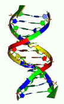

Evolution is a seemingly random process which works in a way which resembles certain approaches we use to get approximate solutions to hard combinatorial problems. You are now to do something completely different.

Given a DNA string S
from the alphabet {A,C,G,T}, find the minimal number of copy operations needed to create another string T
. You may reverse the strings you copy, and copy both from S
and the pieces of your partial T
. You may put these pieces together at any time. You may only copy contiguous parts of your partial T
, and all copied strings must be used in your final T
. Example: From S
= ``ACTG" create T
= ``GTACTATTATA"
- Get GT......... by copying and reversing ``TG" from S
.
- Get GTAC....... by copying ``AC" from S
.
- Get GTAC...TA.. by copying ``TA" from the partial T
.
- Get GTAC...TAAT by copying and reversing ``TA" from the partial T
.
- Get GTACAATTAAT by copying ``AAT" from the partial T
.
The first line of input gives a single integer,
1 t100
, the number of test cases. Then follow, for each test case, a line with the string S
of length
1m18
, and a line with the string T
of length
1n18
.
t100
, the number of test cases. Then follow, for each test case, a line with the string S
of length
1m18
, and a line with the string T
of length
1n18
.
Output for each test case the number of copy operations needed to create T
from S
, or ``impossible" if it cannot be done.
5
ACGT
GTAC
A
C
ACGT
TGCA
ACGT
TCGATCGA
A
AAAAAAAAAAAAAAAAAA
2
impossible
1
4
6